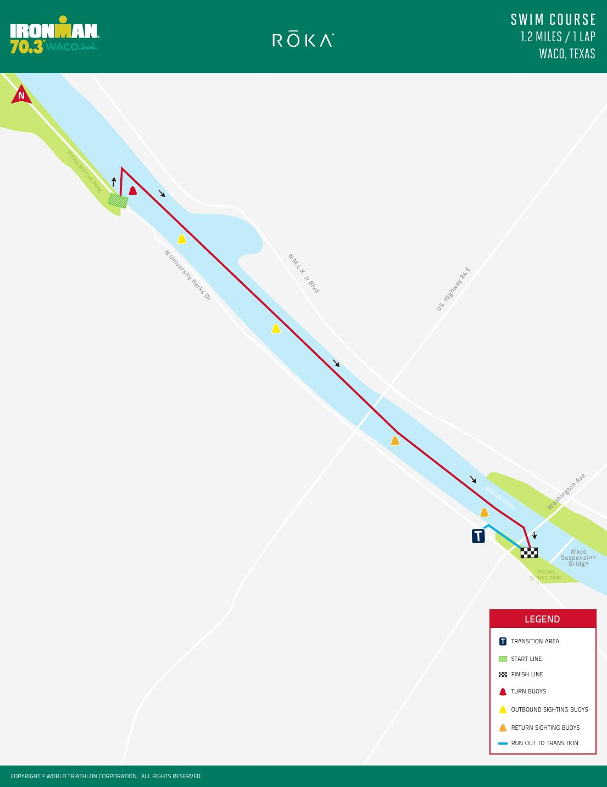
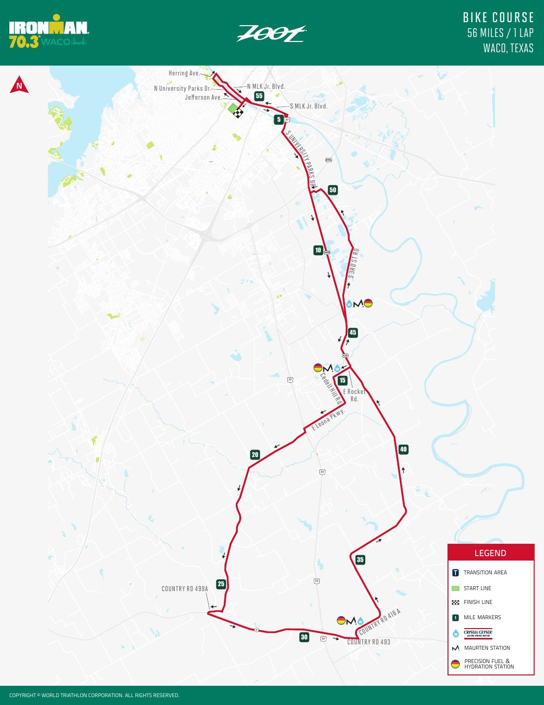
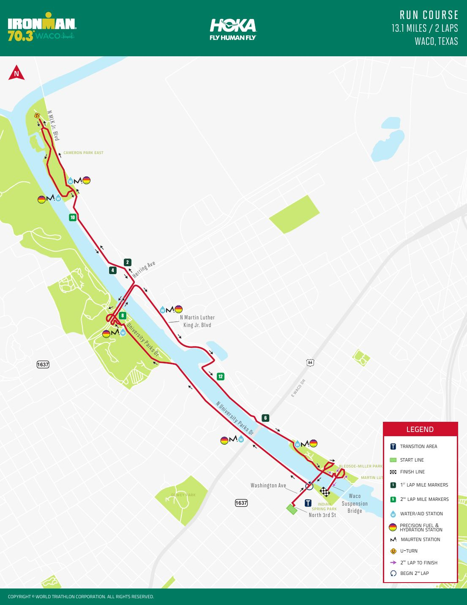
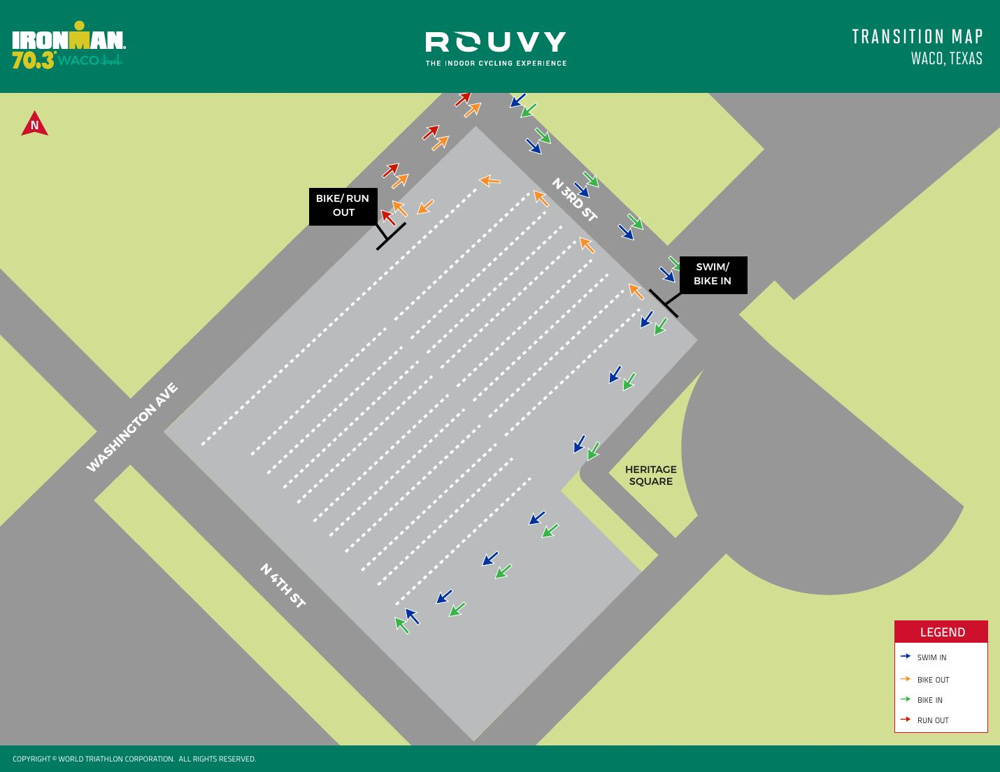
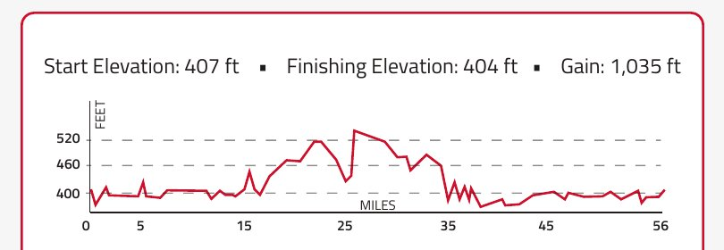
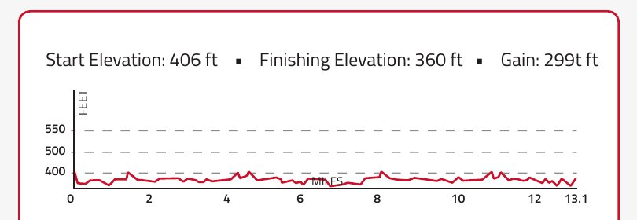
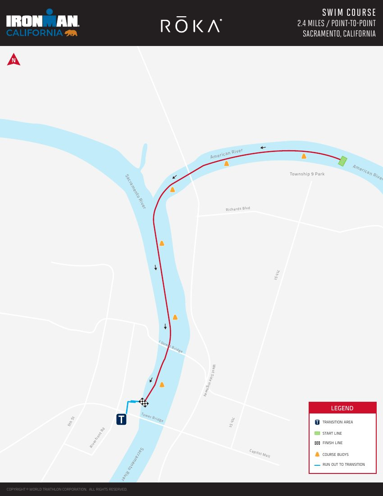
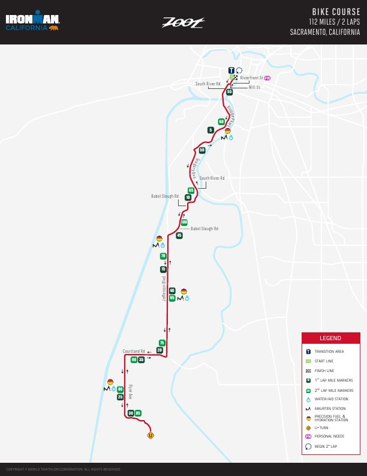
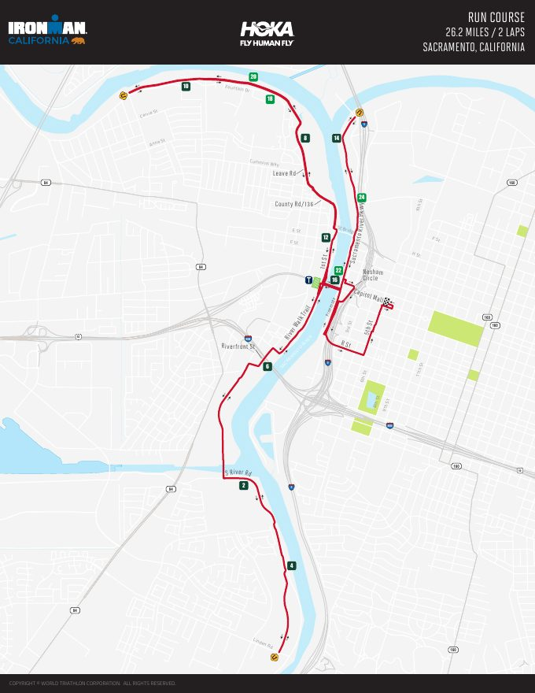

Mon Sep 14, 2026 · 12:00 AM EDT
Live
IRONMAN 70.3 Waco · Sun Nov 14, 2027
Waco, Texas · 1.2 mi Brazos River swim · 56 mi bike · 13.1 mi run · start ~7:20 AM CT (expected)
Live
IRONMAN California (full) · Sacramento · Oct 2028 (TBA)
2028 date not announced yet — countdown is approximate (assumes Sun Oct 22, 2028).
This week
Loading…
Quick insights
- Goal = finish under cutoff, enjoyable training (not podium)
- Swim = get through it — continuity over speed
- Meat-forward meals · leftovers for lunch
- Wine OK in moderation · Gatorade/Clif on long sessions
- Weight path 249 → 230 · MFP base 2360
Recent workouts
Last 7 sessions + next 3 planned · oldest → newest
Workout plan
Phases · week navigator · monthly calendar · standing rules
| Day | Session | Sport | Status |
|---|
Tint = sport · Emerald ring = completed · Today = emerald-600 ring · Click a day for details
Standing rules
- Weekday bike/run at 5:30 AM
- Weekend long sessions at 6:30 AM
- Midday swim at Bow Creek
- Leftovers for lunch · meat-forward dinners
- Wine OK · Gatorade / Clif on long sessions
Sample Foundation week
Workout Progress
Charts from Garmin + planned sessions in DATA
Daily Garmin minutes
Cumulative miles
Planned vs actual minutes
Workout Plan Adherence
Running — cumulative
Minutes (left) · Miles (right)
No sessions yet
Biking — cumulative
Minutes (left) · Miles (right)
No sessions yet
Swimming — cumulative
Minutes (left) · Miles (right)
No sessions yet
Workout log
All Garmin sessions (multi per day when present) · click row for day details
| Date | Planned | Sport | Garmin | Min | Dist | Pace | % | Notes |
|---|
No workouts yet.
Nutrition
MyFitnessPal · base goal 2360 · ±50 tolerance · Monday weigh-ins
Calories per day · planned vs actual
Planned = exercise-adjusted MFP goal on training days · base 2360 on rest
Calorie delta (actual − planned)
Weight trend
249 → 230 lb goalMonday AM weigh-ins · baseline seeded; new readings appear as you report them
IRONMAN 70.3 Waco · Sun Nov 14, 2027
2027 A-race · Waco, Texas · Heart of Texas · finish on the historic Waco Suspension Bridge
Countdown
To ~7:20 AM CT, Sun Nov 14, 2027 (start time expected — 2026 start was 7:20 AM)
Race facts
Cutoffs (2026 Athlete Guide)
| Swim | 1:10 | from your own start |
| Swim + T1 + bike | 5:30 | from your own start |
| Bike checkpoint | 1:10 PM CT | Aid Station 3 (FM 434 & S 3rd St) |
| Run checkpoint | 3:30 PM CT | Riverwalk under Washington Ave Bridge |
| Overall | 8:30 | finish line |
2027 cutoffs will be confirmed in the 2027 Athlete Guide.
Weather expectations (mid-Nov)
- Normal for Nov 14: high ~69°F / low ~46°F (NWS Waco climate normals)
- IRONMAN race profile: high 79°F · low 54°F · water ~65°F
- Records for Nov 14: 91°F (1989) and 22°F (2018), so expect anything from warm to a windy cold front
- Wetsuit: legal at ≤76.1°F water, so a cool November swim is likely wetsuit-legal (the Oct 2024–25 races were 81°F and not wetsuit-legal)
- Note: the 2026 swim (Oct 4) was canceled on race day
The race moved from early October to mid-November for 2027, which matches the “cooler is better” preference.
Interactive course map
━ Swim (Brazos River, downriver) ━ Bike (1 loop) ━ Run (1 of 2 loops) · Approximate traces drawn by Iron Coach on OpenStreetMap from the official 2026 maps and turn-by-turn directions. They're for orientation only, not exact distances. Use the official maps below.
Official course maps
These are the latest published IRONMAN maps (bike, run and transition from 2026, swim from 2023). Maps are subject to change until the 2027 maps publish. © World Triathlon Corporation.
Swim · 1.2 mi / 1 lap

Bike · 56 mi / 1 loop

Run · 13.1 mi / 2 loops

Transition · Heritage Square

Bike elevation: 407 ft start, about 1,035 ft gain, with the rolling climbs between miles 15 and 35

Run elevation: about 299 ft gain over 2 loops, mostly flat riverwalk with short bridge ramps

Key links
Future race · IRONMAN California 2028
Full distance · Sacramento · Oct 2028 (TBA). The 2028 date hasn't been announced, and the 2027 race (Oct 24) is sold out.
Approximate countdown
Approximate: assumes Sun Oct 22, 2028, 7:00 AM PT. It will update once IRONMAN announces the 2028 date.
Course overview
2.4 mi downriver swim, a fast, flat 112 mi bike through farm and wine country, and a 26.2 mi run finishing at the State Capitol. IRONMAN and Visit Sacramento's host agreement runs through 2028. Official page: ironman.com/races/im-california
IRONMAN California reference maps are from 2025–26 (swim/bike 2026, run 2025) and may change before 2028.
IMCA swim

IMCA bike

IMCA run

Sacramento area
OpenStreetMap · Sacramento race venue area